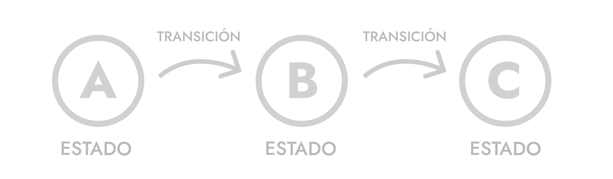

Las animaciones CSS son un conjunto de reglas que describen cómo un elemento debe cambiar sus estilos en distintos puntos del tiempo (fotogramas clave), permitiendo transiciones complejas entre varios estados sin necesidad de scripting, como cambiar gradualmente estilos de un elemento (posición, color, tamaño, opacidad, etc.) a lo largo del tiempo sin JavaScript.
Esto se logra mediante la propiedad @keyframes, que define los fotogramas clave de la animación, y la propiedad animation, que controla la duración, el retraso, el número de repeticiones y otros aspectos de la animación. Las animaciones CSS son ampliamente utilizadas para mejorar la experiencia del usuario al agregar movimiento y dinamismo a las páginas web.
Las Transiciones CSS son cambios de un estado inicial a un estado final, en el caso de las Animaciones CSS se trata de un conjunto de transiciones entre estados, de modo que es posible cambiar entre dos o más estados, a diferencia de las transiciones, donde solo puedes cambiar entre dos estados.

En las animaciones, nosotros definimos los estados o fotogramas clave de una animación dándole estilos mediante propiedades CSS, y el navegador se encarga de crear los fotogramas intermedios entre un estado y otro, para que se produzca la animación y no tengamos que definir cientos de estados o fotogramas intermedios.
Las propiedades de animación en CSS permiten controlar diversos aspectos de una animación, como su duración, retraso, dirección, y número de repeticiones.
La propiedad animation es una propiedad abreviada que permite especificar varios aspectos de una animación en una sola declaración. Sus valores incluyen: duration, timing-function, delay, iteration-count, direction, fill-mode, y play-state.
Sintaxis con un solo valor:
animation: initial | inheritSintaxis con todos los valores:
animation: [nombre de la animación] [duración] [función de tiempo] [retraso] [número de iteraciones] [dirección] [modo de llenado] [estado de reproducción];Tambien podemos especificar cada valor, usando las propiedades individuales de animación, todas incluyen los valores initial | inherit, para reestablecer el valor inicial, o heredar valores.
| Propiedad | Descripción | Valores |
|---|---|---|
| animation-name | Nombre de la animación definida con @keyframes | keyframename | none | initial | inherit |
| animation-duration | Duración de la animación | time | initial | inherit |
| animation-timing-function | (opcional) Función de tiempo de la animación | linear | ease | ease-in | ease-out | ease-in-out | cubic-bezier(n,n,n,n) | steps(int, start|end). |
| animation-delay | (opcional) Retraso antes de iniciar la animación | time | initial | inherit |
| animation-iteration-count | (opcional) Número de repeticiones de la animación | number | infinite | initial | inherit |
| animation-direction | (opcional) Dirección de la animación | normal | reverse | alternate | alternate-reverse | initial | inherit |
| animation-fill-mode | (opcional) Modo de llenado de la animación | none | forwards | backwards | both | initial | inherit |
| animation-play-state | (opcional) Estado de reproducción de la animación | running | paused | initial | inherit |
La regla @keyframes define los fotogramas clave de una animación, especificando cómo debe cambiar un elemento a lo largo del tiempo. Cada fotograma clave se define con un porcentaje (del 0% al 100%) o con las palabras clave "from" y "to".
#element-to-animation{
@keyframes change-color{